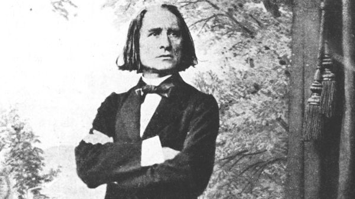

Écrits › Lettres & écrits de compositeurs
Les tribulations d’un compositeur
4 mars 2021

L'été dernier, j'habitais un petit manoir des environs de *. Plusieurs personnes de cette ville me demandèrent obligeamment d'y donner un concert. Je remerciai et refusai, en protestant de mon aversion profonde pour les concerts en général et de mon antipathie particulière pour les concerts de province, où il n'est presque jamais possible de réunir les éléments d'un programme passable. Néanmoins, malgré mes refus et mes dénégations positives, le bruit courut dans le pays qu'un grand concert vocal et instrumental à mon bénéfice devait avoir lieu incessamment. Beaucoup d'amateurs des alentours firent retenir des places ; les demandes, et j'oserais dire les sollicitations redoublèrent de jour en jour ; mes amis enfin, auxquels leur gracieuse hospitalité donnait des droits sur moi, se mirent du complot et me pressèrent tant, que de guerre lassé, je promis tout ce que bon leur semblait, et nous convînmes de faire chacun notre possible pour arranger une soirée musicale telle quelle, dont le produit serait versé dans la caisse des indigents. Aussitôt que le directeur de la société Philharmonique de * fut informé de notre détermination, il vînt m'offrir, avec une excessive bienveillance, l'assistance de ses faibles moyens, (c’est la phrase d'usage) ainsi que le concours actif de la société qu'il avait l'honneur de dire — « Si vous le désirez, me dit-il, nous exécuterons des symphonies, des concertantes, des ouvertures ; — celle de la Sémiramide, de Robin des Bois ou de la Caravanne, par exemple ? Ces sortes de morceaux donnent toujours du relief à un programme ».
Je restais ébahi de la magnificence de ses promesses et je crus ne pouvoir assez lui témoigner ma reconnaissance. M. le directeur devint de plus en plus confiant et éloquent. Pendant une grande demi-heure, il ne cessa de me parler des merveilles de la société philharmonique, il me raconta sa fondation, ses accroissements constants ; et je l'écoutais avec ravissement. De temps à autre, j'osais me permettre quelques questions relatives à la composition et aux statuts de la société. Il y répondit complaisamment et me donna tous les renseignements que je désirai. Je le priai enfin de vouloir bien me faire connaître en détail l’effectifdu cadre des musiciens qu'il avait sous ses ordres, depuis les violons jusqu'au timbales. Il le fit sans hésiter.
Qu'on me permette de transcrire ici littéralement une partie de ses naïfs aveux.
« En fait de premiers violons, me dit-il, il y a moi, mon fils et M. *. Comme seconds, un chirurgien de l'armée en retraite et un notaire. Des altos, nous en avons un. Des violoncelles, idem — C'est un vieil employé de la mairie. La contrebasse manque. Cette espèce d'instrument n'a jamais pu s'acclimater dans ce département. Quant aux instruments à vent, c'est là un peu notre faible. Nous avons bien un monsieur qui joue de la flûte, mais il est toujours malade ; nous possédons aussi une clarinette, mais je crains que son instrument ne soit en ce moment en réparation à Paris. Pour le cor, par exemple, il est excellent. C'est un jeune homme qui ira loin. Aussi, nous le chargeons toujours de toutes les parties restantes.
Ces parties restantes n'étaient qu'au nombre de douze ou quinze (hautbois, bassons, trompettes, trombones etc., etc. — tous instruments et instrumentistes inconnus à *) que le pauvre diable de cor avait la complaisance de remplacer quand faire se pouvait. Qu'on juge du désappointement que me causa l'indiscrète énumération des parties de notre directeur. Je ne savais que faire ni que dire. Le concert projeté me paraissait complètement irréalisable, et j'étais sur le point d'y renoncer, lorsqu'un secours inespéré nous arriva à l'improviste et mit fin à ma pénible anxiété. Des artistes de Paris, se trouvant momentanément à quelques lieues de *, voulurent bien nous rejoindre et nous prêter main forte. Grâces à leur obligeance, nous parvînmes à organiser un concert excellent, qui fit époque dans les fastes musicales du pays. Quoique la plupart des sociétés philharmoniques aient assez d'analogies avec celle de *, elles contribuent cependant à propager, à stimuler le goût musical en France. Ces sortes de sociétés, qui forment pour ainsi dire la garde nationale de la musique, se sont singulièrement multipliées depuis quelques années. Ce qui leur manque surtout, c'est un généralissime et un état-major. Jusqu'à ce jour, nonobstant le dévouement et les tentatives d'amélioration de plusieurs membres, tant artistes qu'amateurs, elles sont demeurées pauvres, mesquinement stationnaires, faute de direction et de discipline.
Pour leur faire acquérir toute l'importance qu'elles devraient avoir, étendre leur action efficace et progressive il faudrait :
1. Organiser sur le pied de guerre et maintenir au grand complet les cadres de l’orchestre et des chœurs. Les exercer fréquemment par des répétitions graduées avec intelligence, tantôt particulières et spéciales, tantôt générales et complètes.
2. Créer des écoles et des bibliothèques de musique. Attacher aux premières des professeurs capables, et souscrire pour les secondes, aux publications musicales et aux journaux spéciaux les plus remarquables de France et de l'étranger.
3. Etablir des réunions générales tous les cinq ou six ans ; fonder des prix pour les ouvrages sérieux ; fixer un honoraire acceptable pour les artistes distingués dont le séjour ne serait que passager dans les provinces, et qui se feraient entendre dans les concerts delà société, etc., etc[1].
[1] Liszt, Franz, De la situation des artistes et de leur condition dans la société (5e article), Gazette Musicale de Paris, Paris, 30/08/1838, p. 285.